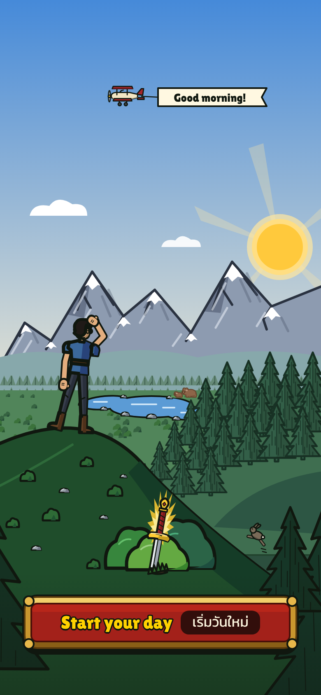
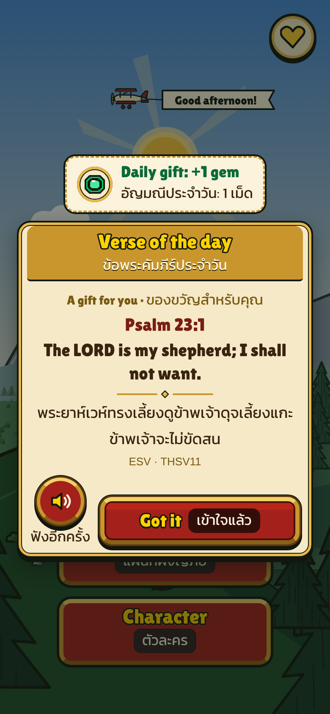
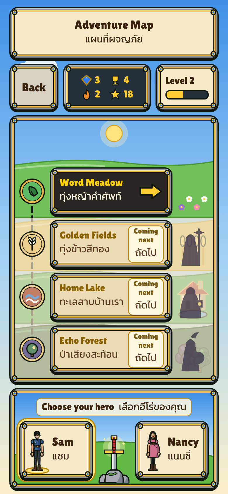

Three files, three messages, in this order. Oct 31, 2026.
Before you start
Use a new, empty Build project. Never Nancy's real one.
The current version stays v5-37 until this test passes.
Have these three files on your phone:
1
nancys-adventure-english-v6-08-PASTE.md
the game · 187,208 characters
md5 95a4d0fce48affdf1541cb862e6d56e5
2
nancys-adventure-english-v6-08-daily-verses.json
the daily verses · 23,133 characters
md5 81295c9fa657c5ff1652204b88c23665
3
nancys-adventure-english-v6-08-title.svg
the title picture · 19,057 characters
md5 bab91ec9df422160507fcf777aba3ef0
1Send file 1: the game
Open a new message in Build.
Open file 1, copy all of its text, and paste it in.
Send, then wait for Build's reply before doing anything else.
2Send file 2: the verses
New message. Copy all of file 2 and paste it in.
Send and wait for the reply.
3Send file 3: the title picture
New message. Copy all of file 3 and paste it in.
Send and wait until Build says it is done.
4What success looks like
Each send goes through with no error and no 'too long' message.
Build reports PASS for each of the four build stages.
The app opens on the mountain title with 'Start your day' (the sky follows the clock).

Title screen

Menu: verse of the day, English and Thai

Adventure Map
5If something looks wrong
An error on send, a 'too long' reply, or Build saying it shortened or summarized a file.
A different title picture, missing Thai, or a verse that is cut off.
Stop there. Take a screenshot and send it with the step number. Don't paste again into the same project.
Pictures are the v6-08 design renders; Build's drawing will differ in detail. Build's own menus and buttons aren't documented on this computer, so these steps describe what to send, not which buttons to press.